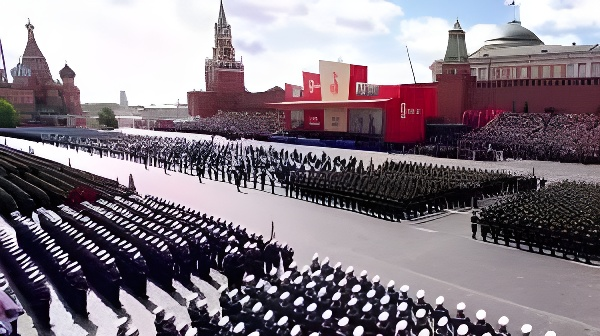

Le 9 mai 2026, pour la première fois en dix-neuf ans, aucun char ni missile n'a défilé sur la place Rouge. En quarante-cinq minutes seulement, devant un parterre de dirigeants étrangers réduit à sa plus simple expression, Vladimir Poutine a célébré le 81e anniversaire de la victoire soviétique sur l'Allemagne nazie. Ce défilé a minima, imposé par la menace des drones ukrainiens et la pression du front, pose une question aussi symbolique que stratégique : que révèle la mise en scène d'une puissance quand la puissance elle-même est contrainte ?
Le 9 mai est la fête patriotique la plus importante du calendrier russe, commémorant ce que Moscou appelle la « Grande Guerre patriotique » : la victoire de l'Union soviétique sur l'Allemagne nazie en 1945. Depuis le retour des équipements lourds en 2008 sous l'impulsion de Vladimir Poutine, le défilé de la place Rouge est devenu une démonstration annuelle de puissance militaire — chars T-90, missiles Iskander, lanceurs balistiques intercontinentaux — destinée autant au peuple russe qu'à la communauté internationale.
En 2026, ce rituel de puissance a subi une rupture inédite. Pour la première fois depuis 2007, aucun véhicule blindé, aucun système de missiles, aucun lanceur lourd n'a traversé la place Rouge. Les corps de cadets des écoles militaires Souvorov et Nakhimov, habituellement présents, étaient également absents. Le ministère russe de la Défense a invoqué, sans détail, « la situation opérationnelle actuelle ». Le porte-parole du Kremlin, Dmitri Peskov, a lui dénoncé « l'activité terroriste de Kiev ».
La raison concrète est claire : les semaines précédant le 9 mai ont été marquées par une intense campagne de drones ukrainiens contre le territoire russe. Les défenses antiaériennes russes ont intercepté 289 drones dans 19 régions au cours des dernières semaines. Exposer des chars et des lanceurs de missiles sur la place Rouge, à ciel ouvert, représentait un risque jugé inacceptable par le commandement.
Retour des blindés sur la place Rouge pour la première fois depuis la fin de l'URSS. Poutine fait du défilé une démonstration de puissance : chars T-90, systèmes Iskander, puis missiles balistiques intercontinentaux les années suivantes.
Premier signe de fragilité symbolique : un seul char T-34 soviétique traverse la place Rouge. Le défilé aérien est annulé pour la deuxième année consécutive. La guerre en Ukraine mobilise l'essentiel des équipements.
80e anniversaire : le défilé retrouve une pompe relative. Chars T-90, missiles Iskander, drones Orlan et Lancet défilent pour la première fois. Xi Jinping, Lula et une vingtaine de dirigeants sont présents. Cessez-le-feu de trois jours décrété.
Campagne de drones ukrainiens sans précédent contre le territoire russe. 289 drones interceptés dans 19 régions. Les aéroports moscovites perturbés. Les défilés annulés en Crimée, dans le Donbass occupé, à Voronej et Nijni-Novgorod.
Donald Trump annonce un cessez-le-feu de trois jours entre l'Ukraine et la Russie. Zelensky accepte, liant l'accord à un échange de 1 000 prisonniers de chaque camp. L'Ukraine signe un décret suspendant les frappes pendant la durée des célébrations.
Défilé à minima de 45 minutes sur la place Rouge. Aucun char, aucun missile, ni corps de cadets. Quelques centaines de soldats défilent, dont des militaires nord-coréens. Internet mobile coupé à Moscou. Seuls quatre dirigeants étrangers présents.
Le défilé du 9 mai sert également à Moscou de baromètre diplomatique. En 2025, pour le 80e anniversaire, quelque 24 dirigeants étrangers avaient fait le déplacement : le président chinois Xi Jinping, le brésilien Lula, le biélorusse Alexandre Loukachenko, le slovaque Robert Fico, le serbe Aleksandar Vučić, ainsi que les présidents vénézuélien, cubain, vietnamien et de plusieurs républiques d'Asie centrale.
En 2026, ce tableau s'est considérablement réduit. Seuls les dirigeants du Bélarus, de la Malaisie, du Laos et le Premier ministre slovaque Robert Fico — seul dirigeant d'un État membre de l'Union européenne — ont fait le déplacement, selon le Kremlin. Des militaires nord-coréens, qui avaient participé aux opérations dans la région de Koursk au printemps 2025, ont également défilé aux côtés de l'armée russe.
Depuis la tribune de la place Rouge, Vladimir Poutine a prononcé son allocution annuelle devant les soldats alignés. Fidèle à sa rhétorique, il a établi un parallèle entre la victoire de 1945 et la guerre en Ukraine, présentée comme une lutte contre une « force agressive armée et soutenue par l'ensemble du bloc de l'OTAN ». « Le grand exploit de la génération victorieuse inspire aujourd'hui les soldats qui mènent l'opération militaire spéciale », a-t-il déclaré.
Le discours évitait soigneusement de s'attarder sur l'Ukraine, n'y consacrant qu'une dizaine de mots directs. Poutine a cependant cité douze batailles de la Seconde Guerre mondiale, parmi lesquelles figurent trois villes ukrainiennes et Koursk — ville russe partiellement occupée par les forces ukrainiennes au printemps 2025. « Notre cause est juste. La victoire fut nôtre et elle le sera pour toujours », a-t-il conclu devant l'hymne national.
| Élément | 9 mai 2025 | 9 mai 2026 |
|---|---|---|
| Matériel militaire | Chars T-90, Iskander, drones | Aucun |
| Durée du défilé | Environ 1h30 | 45 minutes |
| Dirigeants étrangers | ~24 pays (Xi, Lula...) | 4 seulement |
| Internet mobile | Partiellement coupé | Coupé dans tout le centre |
| Défilés régionaux | Maintenus (sauf Sébastopol) | Nombreuses annulations |
| Nord-Coréens | Officiers supérieurs salués | Soldats défilants |
Le défilé s'est tenu à la faveur d'un cessez-le-feu de trois jours annoncé le 8 mai par Donald Trump, présenté comme « le début de la fin d'une guerre très longue ». Zelensky, après avoir signé un décret suspendant les frappes ukrainiennes sur le territoire russe pendant la durée des cérémonies, avait lié l'accord à un échange de 1 000 prisonniers de chaque camp : « La place Rouge est moins importante pour nous que la vie des prisonniers ukrainiens qui peuvent rentrer chez eux. » Mais dès les jours suivants, les combats ont repris sur l'ensemble du front, chaque camp accusant l'autre d'avoir violé la trêve.
En parallèle, des données de l'Institute for the Study of War (ISW) indiquent que, pour la première fois en deux ans et demi, la zone contrôlée par la Russie en Ukraine aurait légèrement diminué en avril 2026 — signalant que la dynamique militaire reste incertaine malgré les discours de victoire.
Le défilé du 9 mai 2026 restera dans les annales comme celui de la contrainte. Pour Vladimir Poutine, la parade de la place Rouge n'est pas un simple cérémonial : depuis 2008, elle est un instrument de gouvernement — une mise en scène de la puissance russe destinée à consolider l'adhésion intérieure autant qu'à impressionner l'extérieur. Que cette mise en scène ait dû, pour la première fois depuis dix-neuf ans, se priver de ses chars et de ses missiles révèle que la guerre en Ukraine n'est pas seulement un conflit militaire : elle consume désormais les ressources symboliques du régime lui-même. Un Kremlin qui renonce à montrer ses blindés n'est pas nécessairement un Kremlin affaibli — mais c'est un Kremlin qui doit, pour la première fois, choisir entre la propagande du triomphe et les contraintes du front.